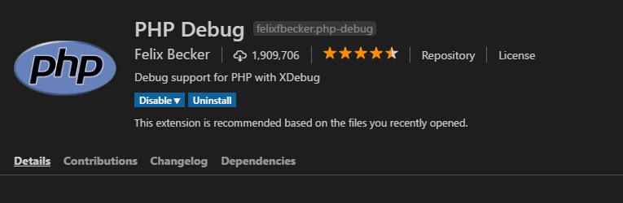
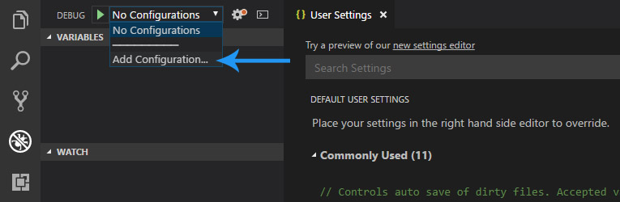
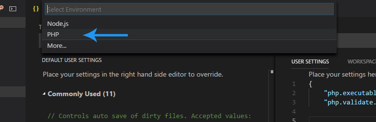
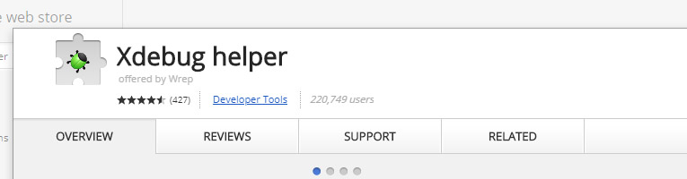

Windows PHP开发环境快速搭建
本文记录了在Windows系统快速搭建PHP开发环境的步骤。
在编写PHP代码的时候，使用Xdebug可以大大提高开发效率。
安装PHP
第一步
从apachefiends下载并安装xampp。
第二步：安装XDebug
- 根据XDebug官网的安装向导安装Xdebug
- 在php.ini中添加以下的设置并重启Apache
[xDebug] zend_extension="php_xdebug-2.6.0-7.0-vc14.dll" xdebug.remote_enable = 1 xdebug.remote_autostart=on
配置VSCode
第一步
点击左侧"Extensions"标签，搜索PHP Debug插件

第二步
如同所示添加配置

然后选择PHP

- 使用自动生成的Configuration就可以了。后续假如有问题，有可能需要修改
runtimeExecutable。更多的配置可以查看PHP Debug的官网 - 点击左侧的“Debug"并选择"Launch currently open script"就可以调试当前打开的PHP文件了。
第三步（可选）
为了能够模仿真实的用户访问（发送Get或Post HTTP请求等），对PHP代码进行调试。需要安装Chome浏览器的Xdebug help插件。
使用Chrome浏览器访问插件市场安装 
- 有可能需要设置IDE Key。打开Chrome浏览器的Xdebug help插件配置页面，填写IDE Key。IDE Key在localhost/phpinfo.php页面的xdebug那里可以找到。
使用Xdebug
调试
- 对于不需要考虑浏览器的调试，只需打开PHP文件然后在调试面板选择"Launch currently open script"就可以了
- 对于需要考虑浏览器的调试，需要使用Chrome打开页面并且选择
Debug。相应的结果就会显示在VSCode里了。
Profiling
- 在php.ini中进行下面的配置
xdebug.profiler_enable = 0 xdebug.profiler_output_name = xdebug.out.%t xdebug.profiler_output_dir = /tmp xdebug.profiler_enable_trigger = 1 - 下载并安装webgrind
- 访问
http://localhost/phpScriptsNeedsToBeProfiled.php?XDEBUG_PROFILE=true
本文参考了codewall的文章。图片也是转自同一篇文章。